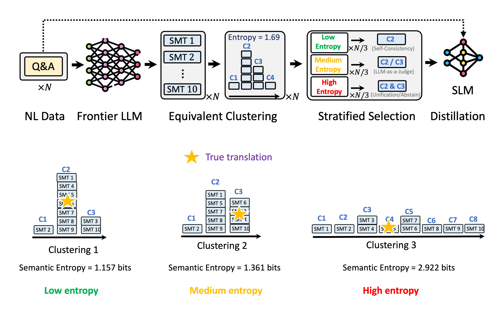

October 1, 2026 · NeurIPS 2026 Workshop
Stratified Consistency Distillation for Natural Language Formalization
We've been training small open models to translate natural language policies into formal specifications, a step known as policy formalization.
The policies might describe authorization rules, compliance requirements, filesystem access, or network permissions. Once those rules have a formal representation, a system can check an agent's actions or a formalized interpretation of an LLM's answer against them. But the check is only meaningful if the translation preserved what the policy meant.
There are several ways to express these rules. Cedar is the authorization policy language behind Amazon Verified Permissions. Dogwood combines Cedar policies with temporal conditions over an agent's actions. OpenShell uses YAML policies to describe filesystem and network access, while Common Expression Language (CEL) lets applications express and evaluate conditions. For reasoning directly with solvers and proof assistants, we can use SMT-LIB, the standard input language used by solvers such as Z3 and cvc5, or Lean.
NVIDIA's OpenShell write-up on formal methods and Z3 gives a concrete example: its policy prover checks whether a proposed policy stays within an approved access boundary. If it doesn't, the solver can produce a counterexample showing access that the proposed policy allows but the boundary forbids.
The bottleneck is getting the translation right. Frontier models can do this well with careful prompting, but repeated inference is expensive, and closed model weights limit how we can adapt them to a particular application. We wanted to distill that ability into smaller open models we could fine-tune and run ourselves.
Our approach, Stratified Consistency Distillation, tackles this for SMT-LIB. We sample multiple translations from a frontier model, use Z3 to cluster them by logical equivalence, and compute semantic entropy over the clusters. This measures disagreement about meaning: two translations that look different can still express the same rule.
We then choose the training target, or pseudo-label, according to how much the model disagrees with itself:
- Low entropy: choose a translation from the largest cluster—the majority vote.
- Medium entropy: ask an LLM judge to choose between the two leading clusters.
- High entropy: try to unify the leading translations, or leave the example out.

During his internship with the AWS Automated Reasoning group, Zhichao Hou turned this into a distillation pipeline for fine-tuning a small open model.
On FOLIO, SCD takes Qwen2.5-7B-Instruct from 21.9% to 55.2% Pass@10; ordinary distillation reaches 50.3%. Pass@10 measures whether at least one of ten generated translations is logically equivalent to the reference formula. These are the results in Table 1 of the paper. The paper also reports 5–20× lower inference cost than the frontier teacher.
The same idea could extend to other target languages, provided we have a suitable way to check semantic equivalence. The experiments here use SMT-LIB and Z3; applying the recipe to other policy languages would require implementing and evaluating those checks.
An early version of this work will appear at the AI for Verifiable Coding workshop at NeurIPS 2026. Joint work with Zhichao Hou, Joseph Lilien, Rémi Delmas, and Ali Torkamani.